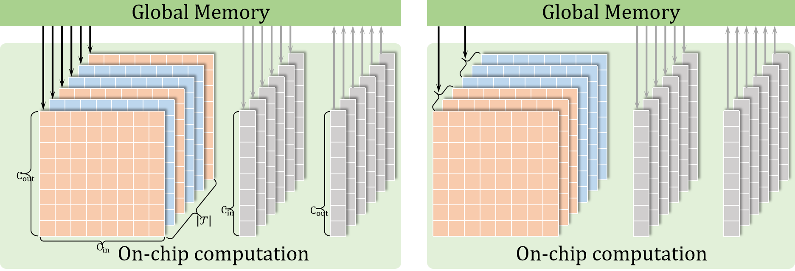
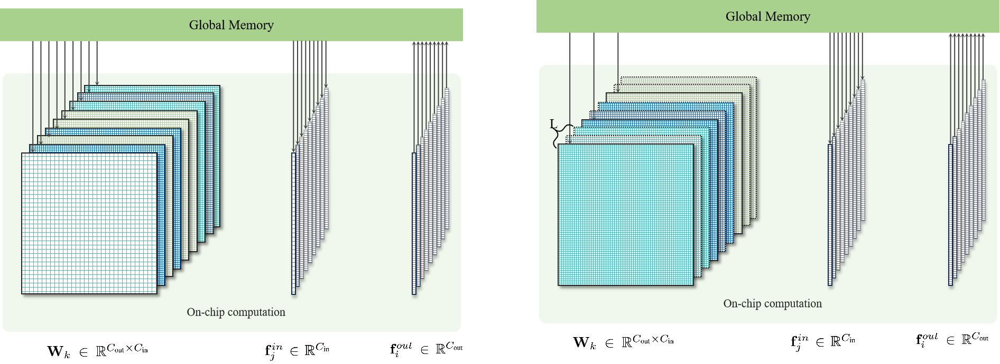

Abstract
We propose PointCNN++, a novel architecture that resolves the long-standing trade-off between geometric precision and computational performance in learning from 3D point clouds. PointCNN++ generalizes sparse convolution from discrete voxels to continuous points, formulating convolution as a Matrix-Vector Multiplication and Reduction (MVMR) problem with a dedicated GPU kernel for native computation. Our experiments show that PointCNN++ achieves an order of magnitude less memory consumption and several times faster performance than representative point-based methods, while improving registration accuracy.
Video Presentation
Method Overview
 PointCNN++ centers the receptive field directly on the original point coordinates and conducts adaptive local voxelization only within each neighborhood to align with convolution kernels. This design preserves geometric fidelity while decoupling kernel resolution from global voxel quantization. The MVMR formulation enables a zero-memory-overhead GPU implementation, ensuring both high fidelity and high performance.
Experimental Results
Registration

On KITTI and 3DMatch benchmarks, PointCNN++ outperforms existing methods even without task-specific tuning. Plugging our backbone into the classic FCGF pipeline improves registration recall to 99.8% and reduces RTE to 0.19 m, while consuming 10× less GPU memory and achieving faster forward/backward passes than both point- and voxel-based baselines.